文档集、分组、标签和属性
典型的研究会比较项目中的两个部分，例如行动派的文本与怀疑派的文本，或者一家媒体与其余所有媒体。LemmaLoom 提供了多种方式来描述这两个部分。属性存储与每个文档有关的事实信息。文档集和智能文档集是有名称的文档集合，可以作为一项分析的对象；分组在导航栏中整理文档列表；最后，标签是完全自由填写的名称，可以加在你所有项目的文档上。
对文档集、智能文档集、标签和属性所做的更改，都可以用编辑 ▸ 撤销（⌘Z）撤销。菜单项会准确写明要撤销的是什么，例如撤销新建文档集或撤销设置值。详细说明请参阅第 23 章“撤销与重做”。
关键术语
- 文档集是有名称的文档集合，其中的文档由你手动添加。一个文档可以属于任意多个文档集。文档集可以用作分析的范围，即一项分析任务所分析的文档。
- 智能文档集是由条件决定其中文档的文档集。只要成员所依据的内容有变化，LemmaLoom 就会相应地重新计算智能文档集的成员。
- 条件检验文档某一项特征的值，由一个字段、一种比较方式和（通常还有）一个值组成。例如，条件可以检验“读者数”是否至少为 100,000。
- 分组是导航栏文档部分中的文件夹。与文档集不同，每个文档最多属于一个分组。
- 标签是描述文档某些方面的简短名称，可以自由填写，例如“评论”或“热门”。标签在你的所有项目中通用。
- 属性是关于项目中每个文档的事实，例如“立场”或“发表日期”，只需为项目定义一次。项目中的每个文档都可以有自己的属性值。
- 原文文档指不是译文的文档。文档集总是由原文组成。凡是涉及文档集、标签或整个项目的分析任务，都读取原文，除非你要求读取译文。
该用哪一种
| 文档集 | 智能文档集 | 分组 | 标签 | 属性 | |
|---|---|---|---|---|---|
| 文档何时加入 | 你添加它时 | 它符合条件时 | 你把它移入时 | 你输入标签时 | 你填写值时 |
| 每个文档 | 任意多个文档集 | 任意多个智能文档集 | 最多一个分组 | 任意多个标签 | 每个属性一个值 |
| 归属 | 项目 | 项目 | 项目 | 项目（名称由所有项目共用） | 项目 |
| 在标签页中打开并显示项目视图 | 是 | 是 | 否 | 是 | 否 |
上面哪一种适合你，取决于你之后想用这些文档做什么。
- 属性存储你关心的任何事实值，以后可以据此比较和筛选文档。常见的例子有文本所持的立场、刊登的媒体、发表日期等。
- 如果收集文档时没有具体的标准，可以选用文档集。分析必须只涵盖你选出的那部分文档时，适合用文档集。分析手动挑选的文档时，文档集很方便，例如准备细读的文本，或者要与同事讨论的文本。
- 如果属性值、标签或其他特征已经说明了哪些文档属于一类，就适合用智能文档集。你添加文本或更正某个值时，它会自行更新。
- 与文档集不同，分组只是在导航栏中整理文档，例如按材料的种类或来源归类。
- 标签是不带值的自由名称。如果你在几个项目中以同样的方式使用某个名称，就适合用标签。每个标签都能像文档集一样，在标签页中打开带有它的文档。
“气候辩论”项目中的文档以多种方式组织。行动派和怀疑派的文本分别组成名为“行动派”和“怀疑派”的文档集。有几篇文章加了“评论”和“热门”标签。文档还按发表的媒介分在“纸媒”和“网络”两个分组中。
借助“气候辩论”中的属性（例如“立场”），可以分析行动派文本与怀疑派文本在编码实例上的差异。智能文档集“广泛传播”则按“读者数”较高这一预设标准自动更新。
本章的示例
本章的示例使用本指南的示例项目“气候辩论”（见第 1 章“简介”中的示例项目）。这个示例项目已经建立索引，包含 14 个原文文档，它们的值、分组和标签如下：
| 文档 | 立场 | 读者数 | 发表日期 | 媒体 | 分组 | 标签 |
|---|---|---|---|---|---|---|
| 时间不多了 | 行动派 | 412,000 | 2024-08-21 | 北方先驱报 | 纸媒 | 评论 |
| 来自气候罢课的信 | 行动派 | 186,000 | 2024-09-02 | 绿线博客 | 网络 | 热门 |
| 我们为什么封路 | 行动派 | 41,000 | 2023-11-14 | 绿线博客 | 网络 | |
| 农民不是敌人 | 行动派 | 23,000 | 2024-08-09 | 农田与牧场 | 纸媒 | |
| 一位市长的承诺 | 行动派 | 8,500 | 2024-10-08 | 市政厅通讯 | 网络 | |
| 希望要靠行动 | 行动派 | 72,000 | 2023-12-02 | 每周纪事 | 纸媒 | |
| 模型总是失准 | 怀疑派 | 96,000 | 2024-03-12 | 每周纪事 | 纸媒 | |
| 净零代价高昂 | 怀疑派 | 398,000 | 2024-10-22 | 北方先驱报 | 纸媒 | 评论 |
| 不必恐慌 | 怀疑派 | 254,000 | 2024-09-26 | 直言网 | 网络 | 热门 |
| 转型谁来买单 | 怀疑派 | 57,000 | 2024-11-05 | 直言网 | 网络 | 评论 |
| 科学从无定论 | 怀疑派 | 68,000 | 2024-06-18 | 每周纪事 | 纸媒 | |
| 2024 热浪报告 | 中立 | 3,100 | 2024-09-16 | 国家气象气候局 | ||
| 碳税之争 | 中立 | 875,000 | 2024-09-19 | 北方先驱报 | ||
| 电台辩论 | 中立 | 310,000 | 2024-09-17 | 北线电台 | 网络 |
“2024 热浪报告”和“碳税之争”不属于任何分组，也没有标签。“时间不多了 (英语)”是项目中的第十五个文档；它是译文，所以与原文“时间不多了”共用属性值、分组和标签。文档集“行动派”包含“立场”为“行动派”的六个文档，“怀疑派”则包含“立场”为“怀疑派”的五个文档。最后，智能文档集“广泛传播”包含“读者数”至少为 100,000 的文档。“电台辩论”的录音长 4 分 58 秒。
文档集
文档集决定分析哪些文档。在“气候辩论”中，“行动派”和“怀疑派”各自由一方的文本组成。文档集“行动派”中有一个关键词查询，它把这个文档集中各文档的用词与文档集“怀疑派”中的用词进行对比。关键词列表把一个文档集与另一个文档集或项目中的其余所有内容进行对比。如果你的研究要比较几类文本，就应当为每一类建一个文档集。
导航栏的文档集部分按添加的先后列出项目中的文档集和智能文档集，每个旁边都显示其中的文档数量。手动建立的文档集带有堆叠图标，智能文档集带有筛选图标。点按文档集旁边的展开三角形，可以列出其中的文档。点按其中一个文档即可打开它。
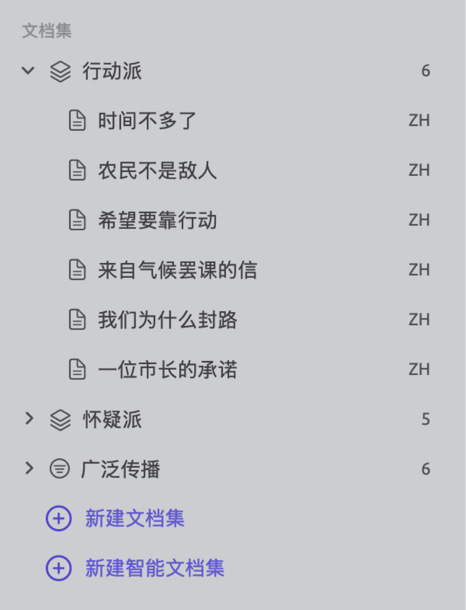
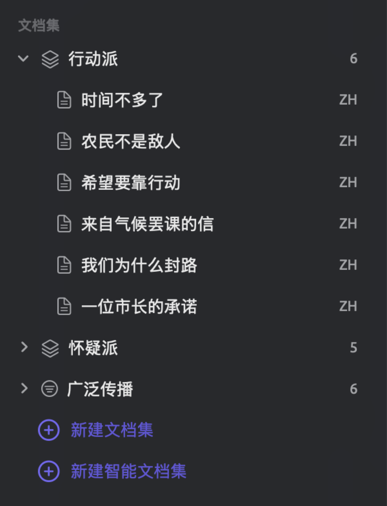
新建文档集
从预先选中的文档新建文档集最快。下图中，导航栏里已经选中了“气候辩论”中行动派一方的六篇文本，它们的快捷菜单中展开了添加到文档集。子菜单中的“行动派”已停用，因为它已经包含全部六个文档。
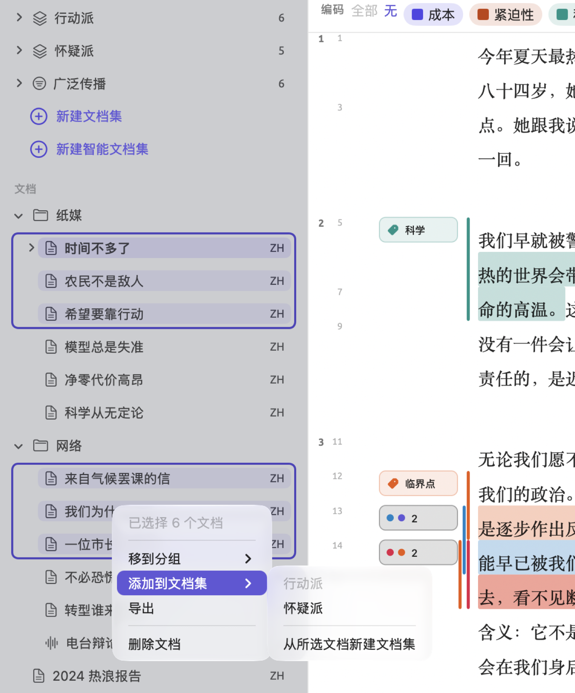
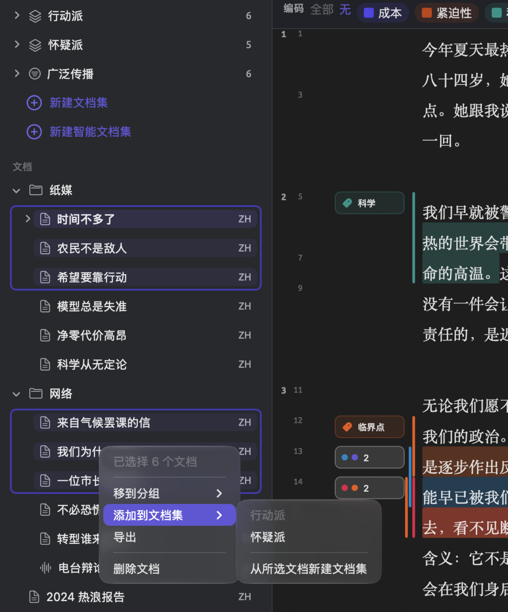
要把选中的文档变成一个文档集：
- 在文档部分中选中这些文档（按住 ⌘ 键或 ⇧ 键点按，可以选择多个）。
- 右键点按其中一个选中的文档，选取添加到文档集 ▸ 从所选文档新建文档集。
- 输入文档集的名称，然后按下 Return 键。
在大型项目中，可以在导航栏顶部的搜索文档栏中输入名称的一部分，再从结果列表中选中需要的文档。项目 ▸ 添加到文档集提供的命令与快捷菜单中的相同。
如果想用单个文档新建文档集，请右键点按该文档，然后选取文档集 ▸ 从文档新建文档集。在你重命名之前，新文档集保留占位名称“从文档新建文档集”。
你也可以先建一个空的文档集，以后再随时添加文档。为此，请点按文档集部分底部的新建文档集，或选取项目 ▸ 新建文档集。输入名称，然后按下 Return 键确认；按下 Esc 键则保留占位名称“新建文档集”。
你还可以用某个查询命中的文档来建立文档集。在查询的操作菜单中选取从命中创建文档集，新文档集以该查询命名（见第 18 章“使用查询结果”中的从命中创建文档集）。
添加和移除文档
要把一个文档加入文档集，请在文档部分中选中它，右键点按打开快捷菜单，选取文档集，再选取要加入的文档集。要添加多个文档，请先选中它们，然后右键点按其中一个，选取添加到文档集，再选取要放入的文档集。已经包含全部所选文档的文档集已停用。菜单中只列出普通文档集，因为智能文档集的内容由它的条件决定。
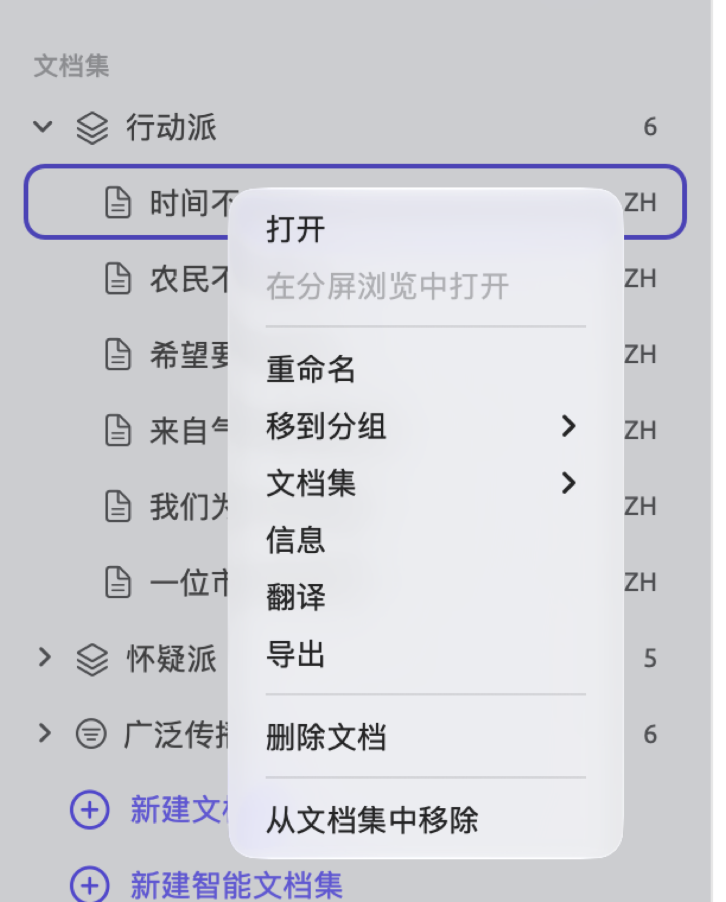
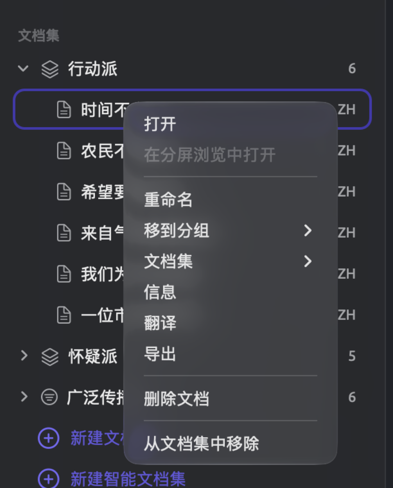
要把文档移出文档集：
- 点按文档集旁边的展开三角形。
- 右键点按该文档，选取从文档集中移除。
在文档集下点按该文档后，也可以使用菜单项项目 ▸ 从文档集中移除。从项目中删除文档后，它也会从所有文档集中移除。
要移出多个文档，请在文档集下按住 ⌘ 键点按这些文档，然后右键点按其中一个，或者打开项目菜单，选取从文档集中移除。如果所选内容中还有其他文档集下的文档或文档部分中的文档，从文档集中移除会变为不可用。
文档集只包含原文。用添加到文档集添加译文时，加入的是它的原文。本章后文的译文会进一步说明译文参与分析时的影响。
打开文档集
文档集在标签页中打开，其中包含导航栏项目下的全部十个视图（从编码本到查询）。不过，这十个视图只涉及属于该文档集的文档。
点按文档集的名称，或者右键点按文档集并选取打开文档集，即可打开它。标签页的标题区域显示文档集的名称及其包含的文档数量。关于这十个视图各自的详细说明，请参阅第 3 章“项目与文档”中的项目视图栏。
通过快捷菜单中的词汇速写，可以在单独的窗口中打开基于该文档集的词汇速写。
重命名、导出和删除文档集
文档集的快捷菜单中有以下选项：
- 重命名会把文档集的名称变成可编辑的文本框。输入新名称，然后按下 Return 键。
- 导出把文档集中的所有文档连同文档集本身导出到一个 LemmaLoom 归档文件中。用这个选项可以把项目的一部分交给同事（见第 22 章“交换与导出”）。
- 删除文档集会立即删除所选的文档集。编辑 ▸ 撤销删除文档集（⌘Z）可以恢复被删除的文档集。点按一个文档集后，也可以用项目 ▸ 删除文档集（⌘⌫）删除它。
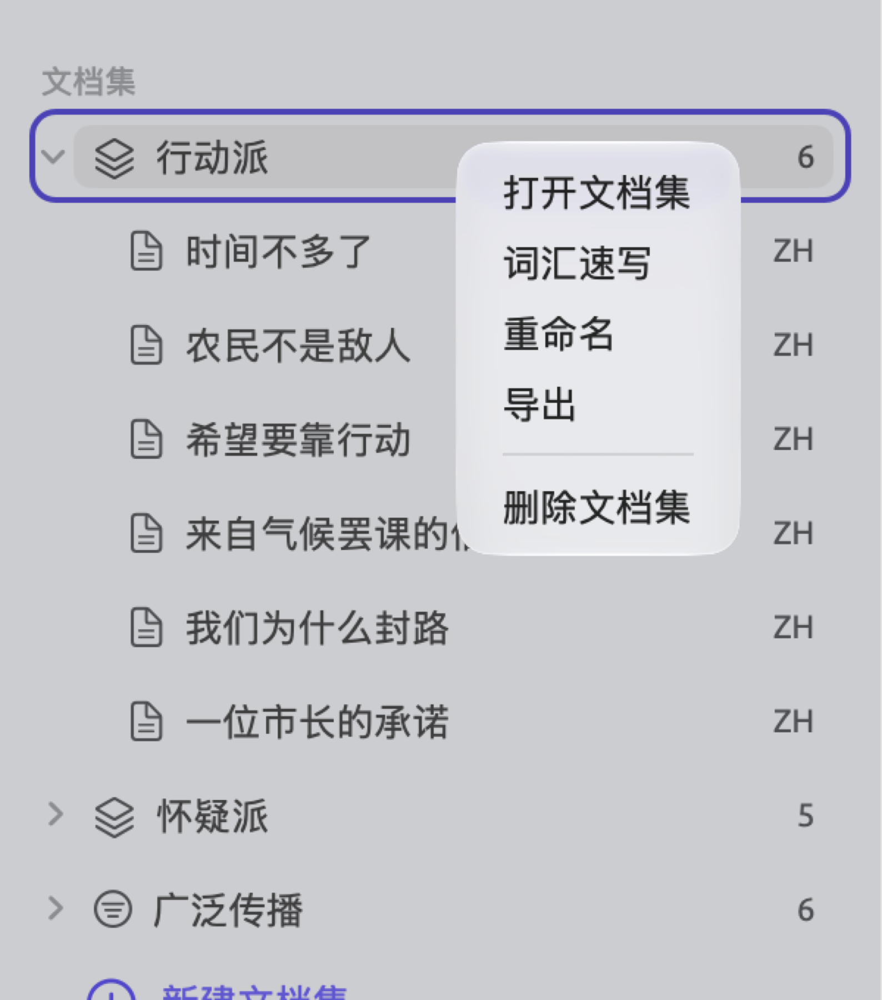
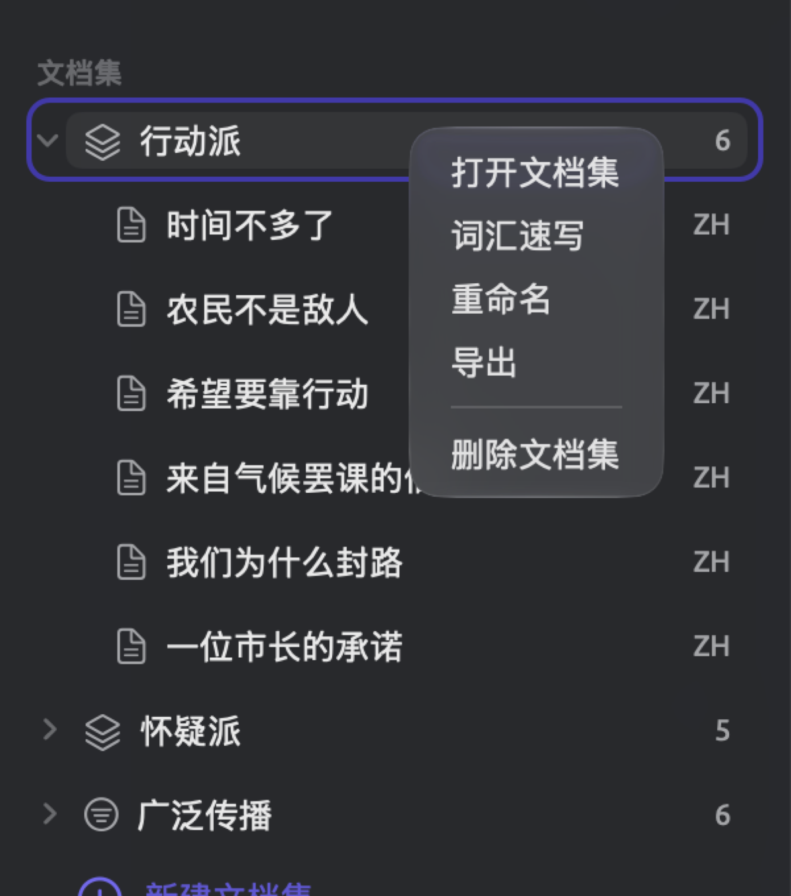
删除文档集后，凡是适用范围为该文档集的编码，其文档集菜单都会显示无。要再次使用这些编码，请选择另一个文档集或适用范围（见第 7 章“编码”中的编码的适用范围）。存储在该文档集中的查询会移到项目的查询视图中。
智能文档集
智能文档集包含符合其条件的文档。在示例项目“气候辩论”中，智能文档集“广泛传播”包含“读者数”至少为 100,000 的六个文档。如果把“模型总是失准”的“读者数”从 96,000 更正为 104,000，这个文档会立即成为“广泛传播”的一员，文档集名称旁边的计数也会加一，变为 7。
在大多数方面，智能文档集的表现与普通文档集相同。它在标签页中打开时有同样的视图，凡是可以用文档集作范围的地方，也都可以用它。智能文档集的成员完全由条件决定，所以要改变其中的文档，就要编辑它的条件。
每次对智能文档集运行分析，分析读取的都是它当时包含的文档。因此，如果这期间有值发生变化，今天对智能文档集“广泛传播”运行的分析，与下周对它运行的同一分析，结果可能不同。
新建智能文档集
“广泛传播”只需要一个条件，但一个智能文档集可以组合多个条件。下图是新建范围更窄的智能文档集“读者众多的行动派”时的对话框，它要求同时满足两个条件，即“立场”是以下任一“行动派”和“读者数”至少为 100,000。从计数（2 个文档）可以看出，这个智能文档集只包含“时间不多了”和“来自气候罢课的信”。
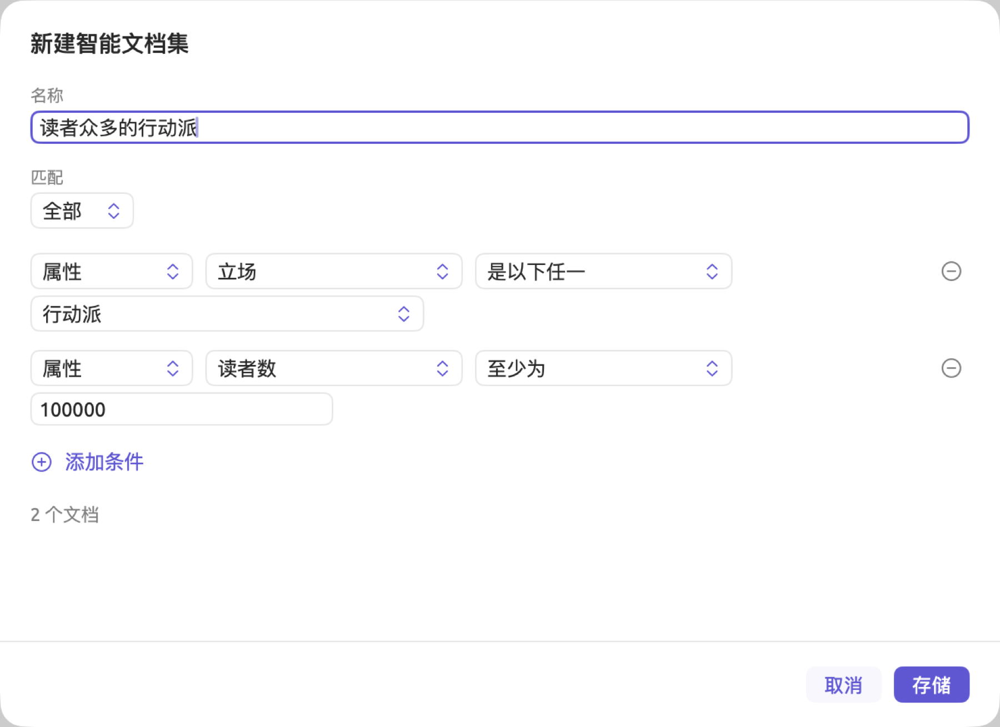
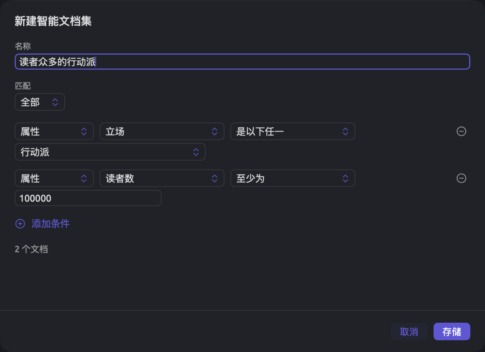
要新建智能文档集：
- 点按文档集部分末尾的新建智能文档集，或选取项目 ▸ 新建智能文档集。新建智能文档集对话框随即打开，其中有一个条件。
- 在名称中输入智能文档集的名称。
- 设置条件。在第一个菜单中选择字段（选择属性时，还要在第二个菜单中选择具体的属性），然后选择比较方式，再填写值（见本章后文的条件中的值）。
- 如果还要检验别的内容，请点按添加条件，用同样的方法设置新条件。
- 在匹配中选择全部或任一（见下文的全部与任一）。
- 查看条件下方的计数，然后点按存储。
每个条件占一行。第一个菜单用来选择字段，例如属性、标签或标题。选择属性时，第二个菜单用来选择具体的属性。接下来的菜单列出适用于该字段的所有比较方式，供你选择。最后填写值。行末尾的移除按钮（移除条件）用来移除条件；只剩一个条件时，这个按钮已停用（仅剩一项）。
新条件默认使用项目的第一个属性及其第一种比较方式。因此，在“气候辩论”中，新条件会自动使用属性、“立场”、是以下任一。如果项目中没有定义任何属性，初始条件默认使用标签和包含以下任一。
计数会随时更新，所以你在设置条件的同时就能预览智能文档集，看到项目中有多少原文文档符合已经填写完整的条件。在你填写完一个条件之前，计数包括所有原文文档。因此，在为“气候辩论”设置第一个条件时，计数显示 14，因为项目中有 14 个原文文档。
在你填写智能文档集的名称（名称为空）并填写完每个条件（不完整）之前，存储一直处于停用状态。将鼠标指针悬停在存储上，可以看到具体原因。不完整表示某个条件需要值却没有值，例如选了至少为却没有在栏中输入任何内容，或者选了是以下任一却没有勾选任何项。
更改条件的字段会清空它的值，但会尽可能保留比较方式；无法保留时，改用新字段的第一种比较方式。更改条件的比较方式则会保留值，所以从至少为换成大于时，不必重新输入数字。
查找文档的查询也可以存储为智能文档集（见第 18 章“使用查询结果”中的把文档查询存储为智能文档集）。
全部与任一
匹配决定各个条件之间的逻辑关系。把匹配设为全部时，文档必须符合所有条件，每添加一个条件，智能文档集就会进一步收窄。按任一匹配时，文档要符合其中一个条件。
以上图中的“读者众多的行动派”为例，它设定了两个条件。第一，“立场”为“行动派”的文档有六个，即“时间不多了”“来自气候罢课的信”“我们为什么封路”“农民不是敌人”“一位市长的承诺”和“希望要靠行动”。第二，“读者数”至少为 100,000 的文档也有六个，即“时间不多了”“来自气候罢课的信”“净零代价高昂”“不必恐慌”“碳税之争”和“电台辩论”。
| 匹配 | 智能文档集中的文档 | 数量 |
|---|---|---|
| 全部 | 两份名单上都有的文档，即“时间不多了”和“来自气候罢课的信” | 2 |
| 任一 | 至少在一份名单上的文档，即六篇行动派文本，以及“净零代价高昂”“不必恐慌”“碳税之争”和“电台辩论” | 10 |
有两个文档同时出现在两份名单上。直接把两份名单的数量 6 和 6 相加，会把这两个文档算两次，所以任一得到 6 + 6 − 2 = 10 个文档。
智能文档集的所有条件都以同一种方式组合，而且只考虑文档本身的特征。像“读者数至少为 100,000 的行动派，或者任何怀疑派”这样的规则，或者检验文档是否属于另一个文档集的规则，都需要改用查询。查询可以嵌套规则（添加条件组，与文档的分组无关），还有文档集字段（见第 15 章“构建查询”中的条件组）。
字段
条件的第一个菜单包含以下字段。只有项目中定义了属性时，这里才会出现属性。
| 字段 | 检验的内容 | 比较方式 |
|---|---|---|
| 属性 | 第二个菜单中所选属性的值 | 取决于属性的类型（见属性的比较方式） |
| 标签 | 文档的标签 | 包含以下任一、包含以下全部、不含以下任何、为空、不为空 |
| 分组 | 文档所在的分组 | 是以下任一、不是以下任何、为空、不为空 |
| 语言 | 文档的语言 | 是以下任一、不是以下任何 |
| 格式 | 文本、PDF、网页、音频或视频 | 是以下任一、不是以下任何 |
| 标题 | 文档的名称 | 是、不是、包含、不包含、匹配、为空、不为空 |
| 作者 | 文档信息中的作者 | 同标签 |
| 日期 | 文档信息中文档本身的日期 | 是、早于、晚于、不早于、不晚于、介于、为空、不为空 |
| 出版方、出版物、URL、DOI | 引用信息 | 同标题 |
| 源文件 | 导入的文件的名称，或导入的网页的地址 | 同标题 |
| 创建时间 | 文档加入项目的日期 | 同日期 |
| 修改时间 | 文档最后一次更改的日期 | 同日期 |
| 颜色 | 文档的颜色 | 是以下任一、不是以下任何、为空、不为空 |
| 词符 | 词和标点符号的数量，在为文档建立索引时统计 | 是、不是、小于、最多为、大于、至少为、介于、为空、不为空 |
| 句子 | 句子的数量，在为文档建立索引时统计 | 同词符 |
| 字符数 | 文本中的字符数，包括空格 | 同词符 |
| 媒体时长 | 音频或视频录音的长度 | 同词符 |
| 含媒体 | 文档是否为音频或视频录音 | 为真、为假、为空 |
| 有译文 | 文档是否至少有一份译文 | 同含媒体 |
| 已跳过索引 | 文档是否在导入时未建立索引，且此后尚未用立即建立索引为它建立索引 | 同含媒体 |
| 索引状态 | 文档的索引处于什么状态 | 是以下任一、不是以下任何、为空、不为空 |
语言只列出原文文档所用的语言。“气候辩论”项目中只有中文原文，因为其中唯一的英语文档是译文。
修改时间是指文档最后一次被编辑、重命名、在分组之间移动，或者标签、文档信息有所更改的时间。在属性窗口中更改属性值，或在标签窗口中重命名或删除标签，都不会影响它的修改时间。
LemmaLoom 在建立索引时自动计算词符和句子。在建立索引之前，两者都等于 0。你可能想用词符 小于 700 这样的条件来选取文档。这样的条件也会选中仍在等待建立索引的文档；再添加索引状态 是以下任一 已建立索引这样的条件，就能把它们排除。字符数直接从文档文本统计，从导入那一刻起就有。
含媒体、有译文和已跳过索引的结果都是真或假。同样，索引状态总是下列七个值之一：
| 值 | 该文档 |
|---|---|
| 已建立索引 | 已经建立索引 |
| 正在建立索引 | 正在建立索引 |
| 正在运行分析器 | 已经建立索引，并且有一个分析器（内置的或你自己编写的）正在处理它（见第 21 章“分析与索引”中的为文档选择分析器） |
| 失败 | 无法建立索引 |
| 未索引 | 正在等待建立索引 |
| 不支持 | 使用英语、德语和中文以外的语言 |
| 已跳过 | 导入时未建立索引，此后也未建立索引 |
条件为索引状态 是以下任一 失败、未索引和已跳过的智能文档集，包含所有仍需处理的文档。文档建立索引后，就不再属于这个智能文档集。要找出所有导入时未建立索引的文档，请使用已跳过索引 为真。关于这些状态的详细说明，请参阅第 21 章“分析与索引”中的按索引状态查找文档。
属性的比较方式
属性的比较方式取决于属性的类型：
| 类型 | 比较方式 |
|---|---|
| 文本 | 是、不是、包含、不包含、匹配、为空、不为空 |
| 整数、小数 | 是、不是、小于、最多为、大于、至少为、介于、为空、不为空 |
| 日期 | 是、早于、晚于、不早于、不晚于、介于、为空、不为空 |
| 布尔值 | 为真、为假、为空 |
| 选择器 | 是以下任一、不是以下任何、为空、不为空 |
条件中的值
条件值的填写方法取决于比较方式和字段：
- 文本和数字填在值栏中。为介于填写值时请注意，它会显示两个栏，两个值的先后顺序不限，而且两端的值都包括在内。因此，查找“读者数”介于
50000和100000时，结果也包括“读者数”恰好等于 50,000 或 100,000 的文档。 - 日期用日期选择器选择，选择器从当天开始。
- 为空、不为空、为真和为假一经选择，条件即算填写完整。
- 对于是以下任一、不是以下任何，以及包含以下任一、包含以下全部和不含以下任何这几种比较方式，请先点按值，随即出现一个复选列表。勾选一项或多项，然后点按列表以外的地方将其关闭；值随即显示你的选择。显示的值可以是“评论”或“热门”，什么都没有勾选时则是无。
列表中可选的项如下：
- 对于选择器属性，是它的选项，后面是文档仍然带有的其他值；
- 对于标签和作者，是项目的文档中用到的标签和作者；
- 对于分组，是项目中的分组；
- 对于语言，是原文文档所用的语言；
- 对于颜色，是从红色到灰色的十一种文档颜色；
- 对于格式，是五种可用的格式；对于索引状态，是上面的七种状态。
媒体时长中的时长按分和秒输入（例如 30:00），或者按时、分、秒输入（例如 1:05:30）。比较之前，时间会先换算成秒，所以 1:05:30 等于 1 × 3,600 + 5 × 60 + 30 = 3,930 秒。只输入一个数字时，按秒计算。例如，“电台辩论”长 4 分 58 秒（4 × 60 + 58 = 298 秒），所以媒体时长 大于 4:00（240 秒）和大于 5（5 秒）都能匹配它。
录音的时长精确到千分之一秒，所以是很少能恰好匹配某个时长。请改用至少为、最多为或介于。
值如何比较
比较文本时，忽略大小写、重音符号以及字符串开头或结尾的空白。比较时也不区分全角和半角字符（中文和日文文本中字母和数字的宽、窄两种写法）。用是比较时，比较的是整个值；包含则在值中的任何位置查找你输入的文本。“媒体”包含 先驱 能找到“北方先驱报”的三个文档。“媒体”包含 北 能找到四个文档，即“北方先驱报”的三个，再加上另一个文档“电台辩论”，因为它的媒体“北线电台”中也有北字。用很短的文本进行比较时，请务必在存储之前查看计数。
匹配用一个简单的文本模式与整个值进行比较。在匹配中，通配符 * 代表任意一串字符，? 恰好代表一个字符。标题 匹配 *辩论 能找到“电台辩论”；标题 匹配 辩论 则什么也找不到，因为模式必须与整个标题匹配。
数字按数值比较，所以 9 排在 10 之前。日期按日历日比较。早于不包括当天，不晚于则包括当天。LemmaLoom 为创建时间和修改时间记录日期和时刻，比较时按你的 Mac 所在的本地时区换算成日期。在“气候辩论”中，“发表日期”介于 2024 年 9 月 1 日和 2024 年 9 月 30 日能找到在此期间发表的五个文档。
比较列表时，是以下任一和包含以下任一要求文档至少具有所选项中的一项，包含以下全部要求文档具有所选的全部项。不是以下任何和不含以下任何都只接受一个所选项都不具有的文档。比较标签、作者和选择器选项这类列表项时，只忽略大小写以及名称开头或结尾的空白。在“气候辩论”中，有三个文档加了“评论”标签，另外两个加了“热门”标签：
| 条件 | 文档 | 数量 |
|---|---|---|
| 标签 包含以下任一 “评论”、“热门” | 时间不多了、来自气候罢课的信、净零代价高昂、不必恐慌、转型谁来买单 | 5 |
| 标签 包含以下全部 “评论”、“热门” | 无 | 0 |
| 标签 不含以下任何 “评论” | 14 个原文中除“时间不多了”“净零代价高昂”和“转型谁来买单”以外的文档 | 11 |
下图是其中的第一个条件，它的标签列表处于展开状态。
没有值的文档
大多数比较都不会匹配没有值的文档。“读者数”小于 10000 能找到“一位市长的承诺”和“2024 热浪报告”，但完全没有“读者数”值的文档都不会被选中。这类文档可能包括刚刚导入的文档。不是、不包含、不是以下任何、不含以下任何和为空这五种比较方式会接受这类文档。
这个区别对不是以下任何影响最大。“气候辩论”中的每个原文都有全部四个属性值，但有两个原文不属于任何分组。分组 不是以下任何“纸媒”匹配 8 个文档，即“网络”中的六个，以及没有分配分组的“2024 热浪报告”和“碳税之争”。要缩小到“网络”中的六个文档，请添加第二个条件分组 不为空，并让匹配保持为全部；计数随即降为 6。
布尔值属性把未赋值的文档视为空。为假只返回值被设为假的文档，无论是勾选复选框后又取消勾选、导入时为假，还是在复选框未勾选的状态下通过设置值指定的。其余文档请用为空查找。
修改智能文档集
要修改智能文档集的条件，请在导航栏的列表中右键点按该智能文档集，从快捷菜单中选取编辑；或者点按该智能文档集，然后选取项目 ▸ 编辑智能文档集。在编辑智能文档集对话框中编辑，与在新建智能文档集中创建的方式相同。只有点按存储才会应用你的修改。要重命名智能文档集，请右键点按它，在快捷菜单中选取重命名。这只会更改名称。
重命名属性或分组时，智能文档集会相应地调整。删除和其他更改的影响如下：
- 删除分组后，所有引用它的条件都会把它去掉。如果分组 是以下任一条件中已没有任何选中的项，只检验这个分组的智能文档集就会变空；下次编辑这个智能文档集时，你会看到值显示为无，在你指定另一个分组或移除这个条件之前，存储一直处于停用状态。
- 删除属性后，检验该属性的条件对每个文档都不成立。选择全部时，智能文档集会变空；选择任一时，其他条件照常起作用。用编辑打开智能文档集时，失效条件的属性菜单是空白的，在你更改或移除这个条件之前，存储一直处于停用状态。
- 更改属性的类型也可能使条件失效。属性改变类型后（例如“立场”从选择器改为文本），不再适用于新类型的比较方式对每个文档都不成立。在各种属性类型中，是以下任一这类比较方式只有选择器类型才有，所以“立场”是以下任一“行动派”会失效。用编辑打开智能文档集时，这样的条件会显示新类型的第一种比较方式，值为空；你必须手动填写值（本例中为“立场”是
行动派），然后存储。 - 最后，在窗口 ▸ 标签中重命名或删除标签，也会相应地影响含有标签条件的智能文档集。重命名标签后，所有标签条件中引用的名称都会变为新名称。删除标签后，它会从包含以下任一和不含以下任何条件中去掉，但会保留在包含以下全部条件中，因此在你编辑这些条件之前，它们对每个文档都不成立。
LemmaLoom 之外的智能文档集
REFI-QDA 交换格式只支持普通文档集。以这种格式导出项目时，所有智能文档集都会导出为普通文档集，其中包含导出那一刻的成员。LemmaLoom 归档文件则保留定义智能文档集的所有条件，以后在另一台 Mac 上的 LemmaLoom 中也能继续使用。关于这两种格式的详细说明，请参阅第 22 章“交换与导出”。
分组
分组是用来整理导航栏文档部分中文档的文件夹。例如，“气候辩论”项目中有“纸媒”和“网络”两个分组，把纸媒上的文章与网上的文章分开，“网络”中还包括“电台辩论”。一个文档最多属于一个分组，文档的译文也会自动位于同一个分组中。关于如何新建分组、向分组中添加文档以及重命名和删除分组，请参阅第 3 章“项目与文档”中的分组。
要分析一个分组中的文档，请新建一个带分组条件的智能文档集（见本章前文的新建智能文档集）。在条件的第一个菜单中选择分组，比较方式保持为是以下任一，然后选择这个分组。这样的智能文档集会随着文档移入或移出该分组而变化。在“气候辩论”中，分组 是以下任一“纸媒”收集“纸媒”中的六个文档，分组 为空则收集不属于任何分组的两个文档，即“2024 热浪报告”和“碳税之争”。
LemmaLoom 的查询也可以通过分组字段读取分组，用模板还可以生成按分组计数的查询结果（见第 17 章“查询模式与发现”中的模板）。编码矩阵可以通过列分组依据按分组归并各列（见第 13 章“编码分析”）。
标签
所有项目共用一份列表
项目、文档、编码、备忘录和链接都可以加标签。你输入的每个标签都属于同一份全局列表，整个资料库都可以使用。查询甚至可以在整个资料库中查找带有特定标签的文档或项目（见第 3 章“项目与文档”中的跨项目工作）。
如果你在“气候辩论”中给某个文档加了“热门”标签，之后在另一个项目中给编码加标签时再输入 热门，用的就是同一个标签。标签名称不区分大小写，所以“CO2”和“co2”是同一个标签。
选取窗口 ▸ 标签可以查看这份全局列表。连按两次某个标签，会在标签页中打开带有它的文档。点按它的某个计数，则会显示当前项目中哪些内容带有这个标签，或者哪些项目使用了它。要在全局范围内更改标签的名称，或者把它从所有带有它的对象上移除，请右键点按该标签。详细说明请参阅第 3 章“项目与文档”中的标签窗口。
为文档添加标签
“气候辩论”中有三个文档加了“评论”标签，即“时间不多了”“净零代价高昂”和“转型谁来买单”；另有两个文档加了“热门”标签，即“来自气候罢课的信”和“不必恐慌”。你可以在导入文档时、在文档信息中或在检查器中添加标签。用检查器更快：
- 打开文档。
- 在检查器中点按文本，再点按详细信息。
- 在标签下点按显示添加标签的栏，输入标签，然后按下 Return 键。输入英文逗号也会结束一个标签。
输入满三个字符（汉字只需一个）后，LemmaLoom 会根据共用的标签列表给出相符的建议。如果某个标签已经以另一种大小写形式存在，无论你输入的大小写如何，它都保持原有的写法。要移除标签，请点按标签上的 × 按钮（移除标签）。在检查器中所做的任何更改都会立即保存，并同时作用于文档及其所有译文。
标签只能逐个文档添加。如果某项内容要在许多文档中重复使用，可以考虑建立一个属性，而不是使用标签。用设置值甚至可以一次为多个文档快速填入值，布尔值或选择器属性也能起到与标签相近的作用（见本章后文的为多个文档设置同一个值）。
导航栏中的标签
导航栏底部的标签部分按字母顺序列出当前项目的文档中出现的标签。每个标签旁边显示带有该标签的原文文档数量；在“气候辩论”中，“评论”旁边是 3，“热门”旁边是 2。这个部分只统计文档上的标签，标签窗口还会统计项目、编码、备忘录和链接上的标签。
标签相当于通往带有它的那组文档的捷径，所以用标签可以快速地同时查看几个文档。
- 点按标签，即可在标签页中打开它。这个标签页与文档集一样有十个视图，但只限于带有该标签的文档。
- 右键点按标签并选取词汇速写，可以根据带有该标签的文档生成词汇速写。
- 右键点按标签并选取重命名或删除标签，可以像在标签窗口中一样重命名或删除这个标签，更改会作用于含有这个标签的每个项目。
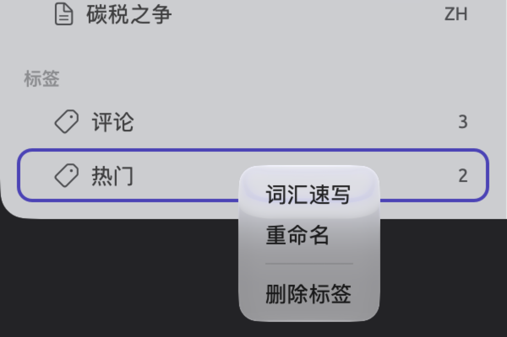
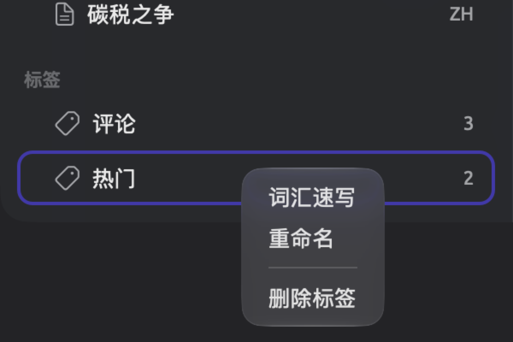
只要再给任何一个文档加上“热门”标签，“热门”旁边的计数就会增加到 3，这个文档也会出现在该标签的视图中。项目中最后一个带有某个标签的文档去掉这个标签后，这个标签就会从标签部分中消失。
关于智能文档集中的标签，请参阅本章前文值如何比较一节中介绍的标签字段。编码上的标签可以用来筛选编码本中的条目；关于为编码、备忘录和链接添加标签，请参阅第 7 章“编码”。
属性
LemmaLoom 中的大多数比较都依赖属性。智能文档集按属性值收集文档，有几种分析也按属性拆分结果（见下文的属性可用在哪些地方一节）。“气候辩论”中定义了四个属性。“立场”按辩论双方划分文本，“读者数”让文档集“广泛传播”能挑出读者众多的文本，“发表日期”记录每篇文本的发表时间，“媒体”记录每篇文本的出处。
属性类型
每个属性都属于六种类型之一。类型决定值可以是什么、应当如何填写，以及条件可以对它进行哪些比较。
| 类型 | 值是 | 填写方式 | 在“气候辩论”中 |
|---|---|---|---|
| 文本 | 任意文本 | 文本框 | 媒体 |
| 整数 | 整数，可以是负数 | 数字框 | 读者数 |
| 小数 | 可以带小数部分的数 | 数字框 | |
| 布尔值 | 真或假 | 复选框 | |
| 日期 | 一个日历日 | 日期选择器 | 发表日期 |
| 选择器 | 你设定的一组选项中的一个 | 菜单 | “立场”，选项为“行动派”“怀疑派”和“中立” |
选择器能让写法保持一致，属性窗口也按选项的顺序为它的值排序。整数和小数类型都支持至少为之类的比较，还能在编码矩阵或速写空间中按区间归并。日期属性支持早于和晚于，编码矩阵还可以按年或按月归并日期。自由文本应作为值填入文本属性。例如，“气候辩论”的“媒体”属性就使用文本类型。本章后文会介绍更改属性的类型（在一定限度内可行）。
属性窗口
属性窗口以表格形式列出项目中的每个原文文档及其属性值。要打开这个窗口，请在主菜单中选取项目 ▸ 属性，或者使用导航栏中项目下该项目的快捷菜单（右键点按项目，然后选取属性）。工作时可以让这个窗口一直开着。图中是“气候辩论”的属性窗口，按“读者数”降序排列，六个行动派文档处于选中状态。
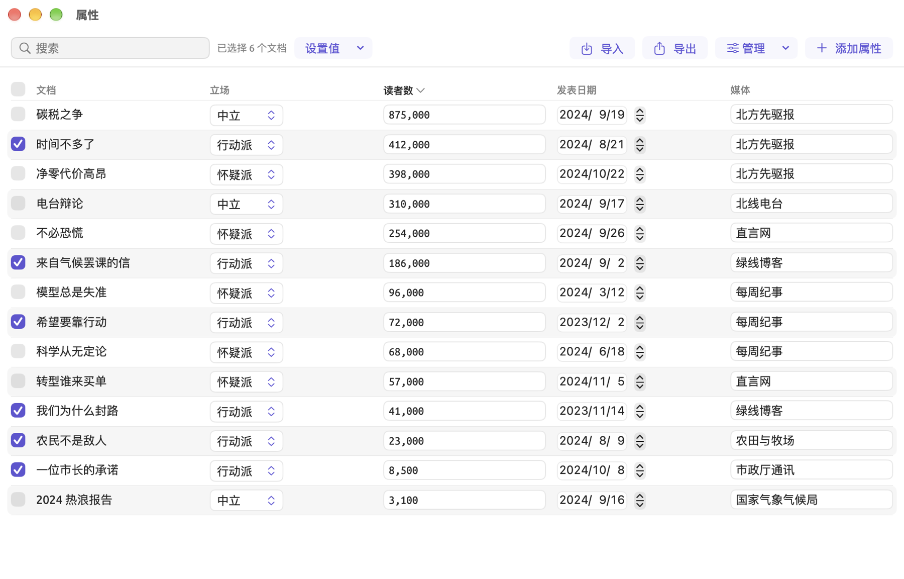
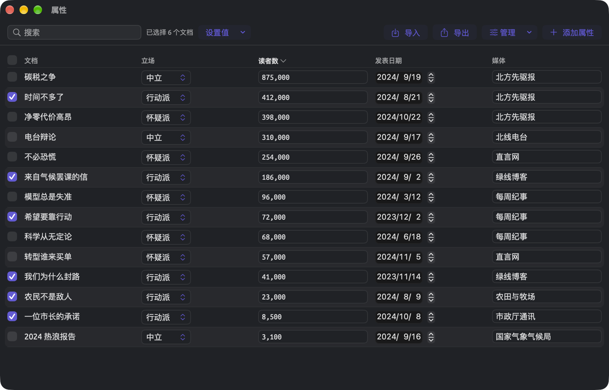
顶部的一行先是搜索，末尾是导入、导出、管理和添加属性。下方是表格，其中有一列复选框、一列文档，项目中的每个属性也各占一列。项目中没有属性时，窗口只显示导入和添加属性。
窗口只显示原文文档。译文文档沿用对应原文的属性值，所以你为“时间不多了”填写的任何值也适用于“时间不多了 (英语)”。
定义属性
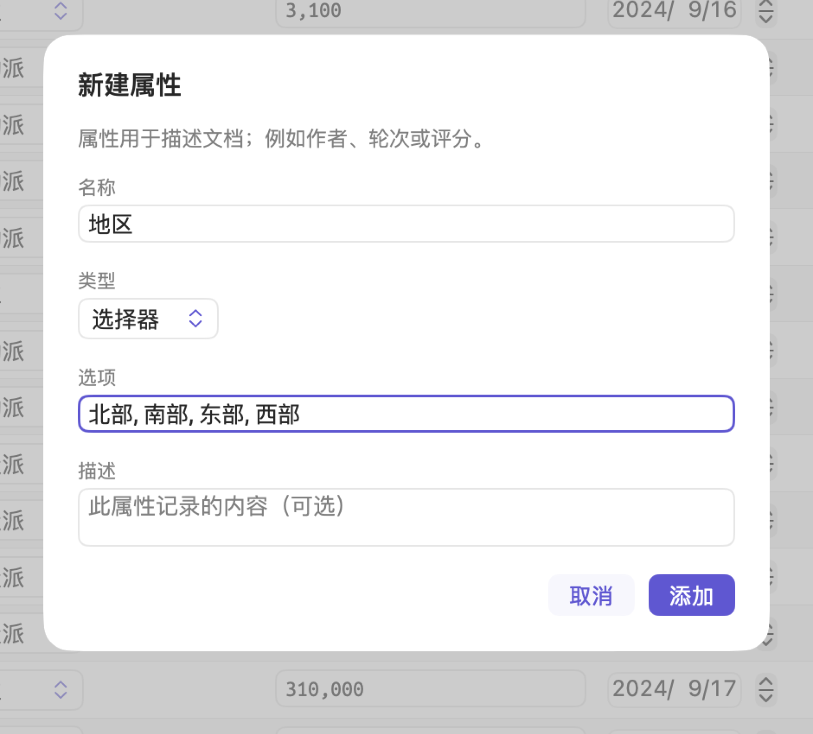
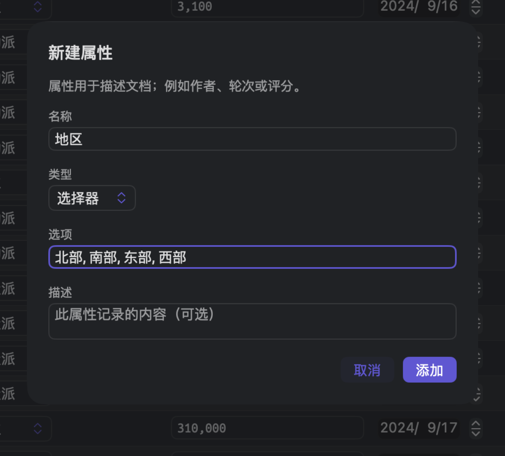
要在属性窗口中定义属性：
- 点按添加属性。
- 在新建属性对话框中输入名称。
- 选择它的类型。
- 对于选择器，请在选项中输入各个选项，每行一个；点按添加选项可以再加一行。
- 如有需要，可以在描述中说明这个属性记录的是什么。
- 点按添加。
名称栏为空时（名称为空），项目中已有同名属性时（比较时忽略大小写，名称已被使用），以及添加的选择器属性没有任何选项时（无选项），添加按钮都已停用。属性创建后显示为表格最右边的一列，各文档在这一列中都没有值。
你也可以通过新建项目和项目信息对话框、文档信息、导入文档对话框或检查器为项目添加属性，从电子表格导入属性值时也可以添加。除了从电子表格导入属性值和使用新建属性对话框之外，只要输入了名称的至少三个字符（汉字只需一个），LemmaLoom 就会从你所有项目的属性中给出建议。建议会显示属性的类型。从建议中选取一项，或者直接输入它的名称，就会复制它的类型和选项，使多项研究中的属性保持一致。新添加的属性只属于当前项目。
填写值
在属性窗口中点按一个单元格，然后根据属性的类型填写值：
- 对于文本，直接输入文本值。
- 对于整数和小数，输入数字后按下 Return 键，或者点按单元格以外的地方。这里只接受数字，删除输入的内容即会删除属性值。
- 对于布尔值，勾选或取消勾选复选框。
- 对于日期，在日期选择器中选择具体日期。
- 对于选择器，从菜单中选择一个选项，或者选择无来移除值。
编辑属性时所做的所有更改都会自动保存。
处理单个文档时，检查器通常更快。它显示当前文档的属性和标签（见下图，图中是“时间不多了”，它有四个值和标签“评论”）。
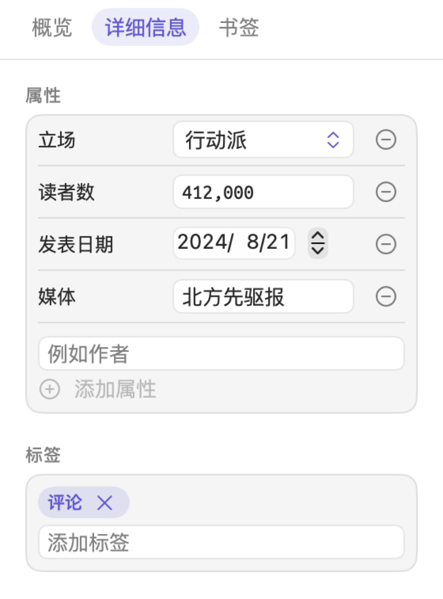
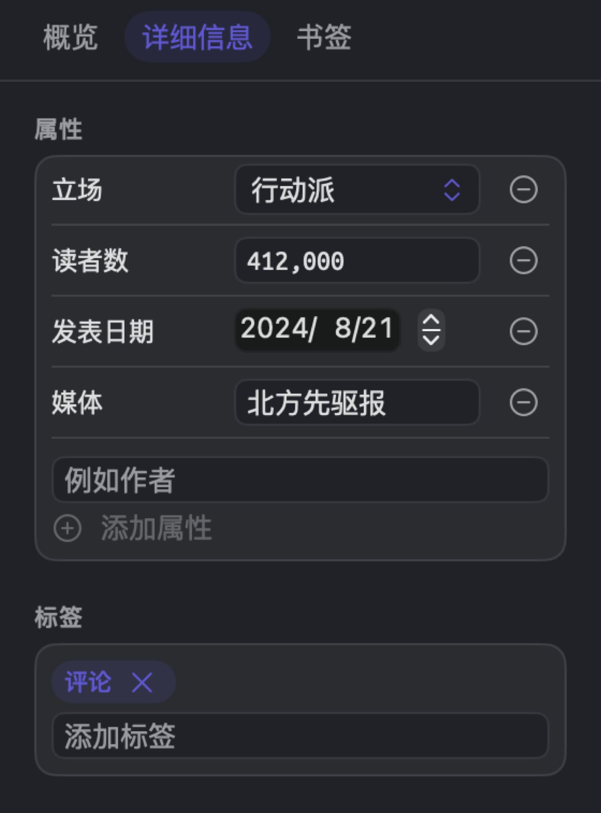
要查看某个文档的属性值，请打开该文档，在检查器中点按文本，再点按详细信息。属性下列出这个文档中每个有值的属性，各占一行。你可以直接在该行中编辑值。要删除这个值而保留项目中的属性，请点按行末尾的移除按钮（移除属性）。更改立即生效。
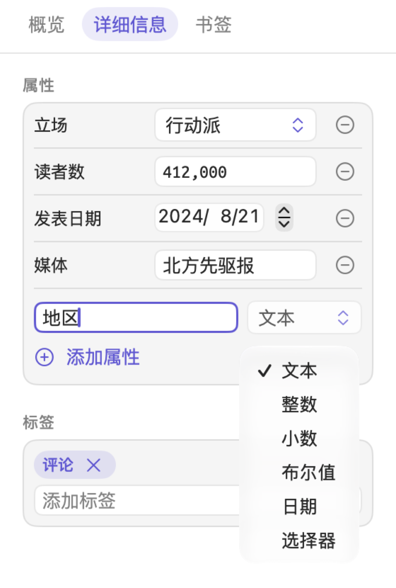
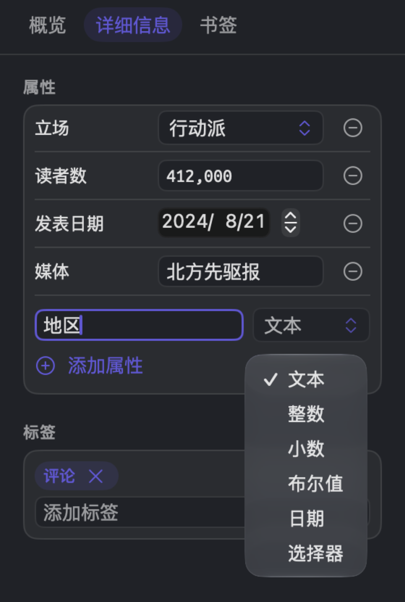
要为当前未显示的属性填写值：
- 在列表下方的栏中输入属性的名称。输入满三个字符（汉字只需一个）后会出现建议。
- 如果项目中还没有这个名称，请在随即出现的菜单中选择类型。对于选择器，还要输入它的选项。
- 点按添加属性，或按下 Return 键。
- 在新出现的一行中填写值。
添加属性按钮在三种情况下已停用，即名称为空时（名称为空）、文档已有这个属性时（已添加），以及新建的选择器没有选项时（无选项）。每当你在列表下方的栏中输入一个新名称，就会把这个属性添加到整个项目中。值留空的行要等你离开该文档后才会删除，属性则仍保留在项目中。
在检查器中更改译文的值，会同时更改对应原文的值。
文档信息的属性部分有相同的栏，点按存储后才会保存（见第 3 章“项目与文档”中的属性）。要从电子表格导入属性值，请参阅第 4 章“导入资料”中的从电子表格导入属性值。
为多个文档设置同一个值
如果多个文档的某个属性值相同，可以同时为它们设置这个值。在“气候辩论”项目中，六个文档的“立场”都是“行动派”，五个是“怀疑派”，三个是“中立”，所以每个值都可以一步分配给相应的文档。本章前文属性窗口中的插图选中了六个行动派文档，正是为了给它们设置共同的值。
要为多个文档设置同一个值：
- 在属性窗口中，勾选文档旁边的复选框。列顶部的复选框可以勾选或取消勾选显示的每一行。
- 这时，窗口会在搜索旁边显示所选文档的数量（例如已选择 6 个文档）和一个设置值菜单。选取设置值，再选取属性。
- 在设置值对话框中选择或输入值。
- 点按应用。
新值会替换所选文档中该属性原来存储的任何值。用编辑 ▸ 撤销设置值（⌘Z）即可撤销。
根据属性是选择器、布尔值、日期还是其他类型，设置值对话框分别提供菜单、复选框、日期选择器或文本框。输入小数时，可以使用你的 Mac 所用的小数分隔符。输入栏为空时（无值），或者输入的值不符合属性类型的限制时（无效值，例如为“读者数”输入 4 万左右），应用会变为不可用。设置值只用于填入值；要删除已有的值，需要逐个文档清除。
设置值作用于已选中且可见的行。如果你先选中了多行，再在搜索中输入内容，搜索可能会隐藏其中一些行，但被隐藏的行仍处于选中状态。因此，设置值旁边显示的数字等于当前选中且可见的行数。要为搜索找到的多个文档设置同一个值，请先搜索，再点按列顶部的复选框。
搜索和排序
用搜索可以只显示标题或单元格中含有你所输入词语的行。搜索不区分大小写。在示例项目“气候辩论”中，搜索 纪事 会显示“希望要靠行动”“模型总是失准”和“科学从无定论”，也就是来自“每周纪事”的三篇文本。
点按列标题，各行会按这一列的值升序排列。再点按一次则反转排序顺序。箭头表示当前选择的排序方向。
- 数值类型的值按大小排序，所以 8,500 排在 23,000 之前。
- 选择器的值按选项的顺序排序。选项为“行动派”“怀疑派”和“中立”时，“行动派”排在其他值之前。
- 文本按字母顺序排序，文本值中包含的数字按数值排序，例如“草稿 2”排在“草稿 10”之前。日期按时间先后排序，布尔值则按先假后真排序。
- 缺少值的文档总是排在最后，与排序方向无关。
- 值相同时，文档按标题的字母顺序排列；从低到高排序时按升序，从高到低排序时按降序。
点按两次“读者数”列标题，各行会从“读者数”最高的值开始排列。如本章前文属性窗口中的插图所示，这样得到一个从高到低的列表，开头是“碳税之争”（875,000）、“时间不多了”（412,000）和“净零代价高昂”（398,000）。随后是读者较少的文档，最后是“一位市长的承诺”（8,500）和“2024 热浪报告”（3,100）。所有缺少这个属性值的文档都排在最后。排序一直有效，直到你关闭窗口。
修改属性
要编辑属性，请选取管理，再选取该属性，然后选取编辑；或者右键点按属性的列标题并选取编辑。编辑属性对话框有名称、类型、选项（仅限选择器）和描述（REFI-QDA 格式导出会包含它）几个栏，与新建属性中的栏一一对应。点按存储按钮会更新属性的定义；名称栏为空时（名称为空），或者选择器没有选项时（无选项），存储按钮会变为不可用。
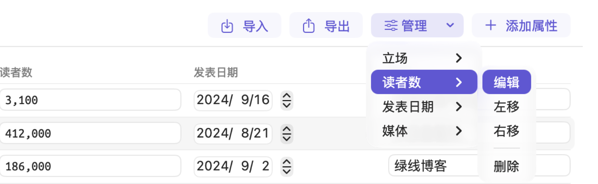
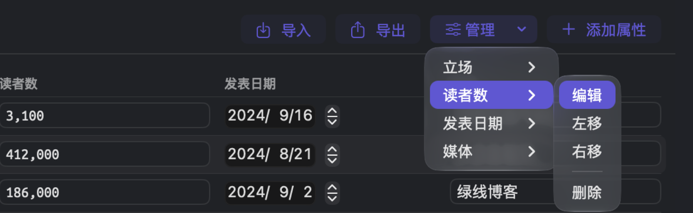
选择器属性的选项可以编辑，用来添加新选项、调整已有选项的顺序或删除选项。选项的顺序决定它们在菜单中的排列和排序方式。无论选项列表如何变化，文档都保留原来的选项值。
- 删除某些文档仍在使用的选项后，这些文档会继续保留这个选项。它在这些文档的菜单中显示在所有已列出的选项之后，在智能文档集中也仍然可以使用。
- 重命名选项（例如把“怀疑派”改为“质疑派”）后，文档仍然带有原来的选项，所以要把它们改过来，需要添加一个使用新名称的选项。添加之后，可以先用设置值把带有旧选项的文档改为新选项，再移除旧选项。
更改属性的类型
有时某个属性最终需要换成完全不同的类型；比如为了保持一致，文本属性的值应当限定在预先确定的几个选项中，这就需要选择器类型。编辑属性对话框中类型下的下拉列表会列出当前类型，以及与该属性现有全部值兼容的所有其他类型。存储时，LemmaLoom 会按新类型改写这些值。各类型兼容的值如下：
| 类型 | 符合的值 |
|---|---|
| 文本 | 任何值 |
| 选择器 | 任何值 |
| 整数 | 用阿拉伯数字写成的整数，需要时带负号，没有前导零；12.0 也符合，会变为 12 |
| 小数 | 用阿拉伯数字写成的数，需要时带负号，最多一个小数点，没有前导零，有效数字不超过 15 位（0.5 符合，.5 不符合）；14 会变为 14.0 |
| 布尔值 | true、false、yes、no、1 和 0，不区分大小写；它们会变为真或假 |
| 日期 | 严格采用 2024-08-21 这种形式的日期（四位数的年、两位数的月和日，用连字符连接）；2024/8/21 不符合 |
对于“气候辩论”项目中的属性，菜单提供以下类型：
| 属性 | 当前类型 | 提供的类型 |
|---|---|---|
| 立场 | 选择器 | 文本、选择器 |
| 读者数 | 整数 | 文本、整数、小数、选择器 |
| 发表日期 | 日期 | 文本、日期、选择器 |
| 媒体 | 文本 | 文本、选择器 |
假设有人在一个记录读者人数的文本属性中输入了 4 万左右。只有在你通过搜索或按这一列排序找到这个值，并把它改为整数之后，菜单才会提供整数。
改为选择器时，如果选项起初为空，LemmaLoom 会自动填入文档已有的值，并按字母顺序（中文按拼音）排列。下图演示了这一点。“媒体”已改为选择器，选项中包括全部八个媒体，开头是“北方先驱报”和“北线电台”。点按存储之前，可以调整选项的顺序或添加选项。
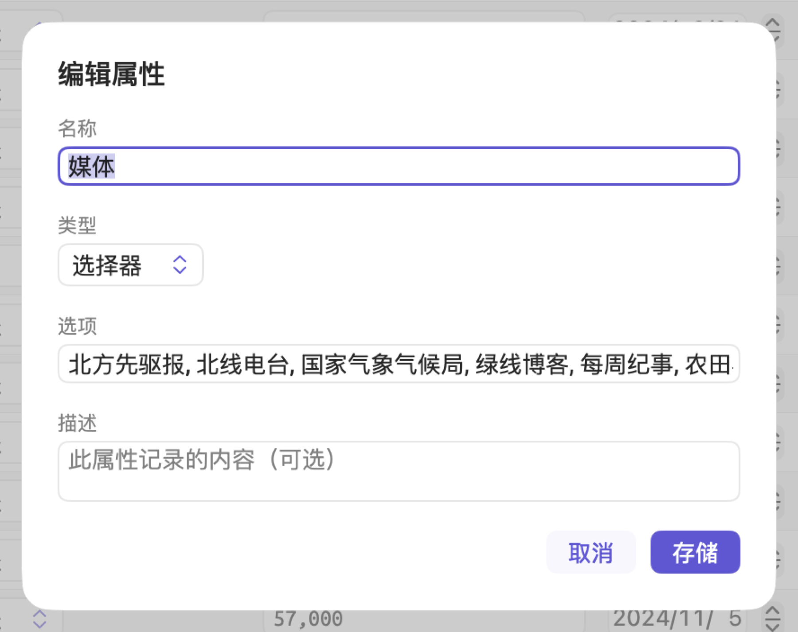
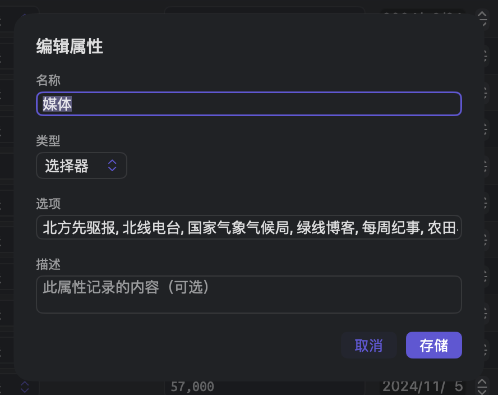
新类型也决定条件可以使用哪些比较方式。在整数和小数之间转换，所有比较方式都不受影响。但如果以其他方式更改属性的类型，之后就必须检查你的智能文档集，具体见本章前文的修改智能文档集。
调整属性的顺序
属性按创建的先后排列。要移动某个属性，请选取管理，再选取该属性，然后选取左移或右移；也可以右键点按属性的列标题。
凡是出现属性的地方都采用这个顺序，包括属性窗口的各列、检查器、文档信息、项目信息，以及智能文档集条件中的属性菜单。新条件默认使用第一个属性，所以最常检验的属性应当排在最前面。
删除属性
要删除属性，请选取管理，再选取该属性，然后选取删除；或者右键点按它的列标题并选取删除。属性会立即连同它在项目中每个文档上的值一起删除。针对这个属性设置的智能文档集条件随即对每个文档都不成立（见本章前文的修改智能文档集）。编辑 ▸ 撤销删除属性（⌘Z）可以恢复被删除的属性及其值。在项目信息中删除属性，点按存储后效果相同；用编辑 ▸ 撤销项目信息可以全部恢复。
导出和导入属性值
导出会创建一个电子表格程序可以打开的 CSV 文件，当前显示的每一项各占一行，顺序与显示的相同。文件中先是文档列，列出文档标题，后面每个属性各占一列。文件名根据项目名称生成，例如 气候辩论-attributes.csv。
导入从 CSV 文件或制表符分隔的文件中读取属性值，必要时还会在导入过程中创建属性。具体做法请参阅第 4 章“导入资料”中的从电子表格导入属性值。要添加或更改许多属性值，最简单的做法往往是先导出表格，在电子表格程序中修改，再导入回来。
属性可用在哪些地方
- 智能文档集检验属性值，见本章前文的智能文档集。
- 编码矩阵可以按属性归并各列（见第 13 章“编码分析”）。
- 速写空间比较词在不同属性值之间的语法特征（见第 14 章“速写空间”中的比较属性取值）。
- 查询在规则中检验属性值（见第 15 章“构建查询”中的字段）。比较把一个属性每个值的计数并排显示，并给出统计检验（见第 16 章“查询结果与统计”）。
编码也可以有属性，这些属性为每个编码实例分别保存值。它们直接添加在编码上，属性窗口只显示文档的属性。详细说明请参阅第 7 章“编码”中的带属性的编码。
用文档集和标签限定范围
可以用文档集、智能文档集或标签来限定所分析的文档。下表列出可以选择它们的位置：
| 位置 | 文档集和智能文档集 | 标签 |
|---|---|---|
| 从导航栏打开的标签页及其十个视图 | 是 | 是 |
| 词汇速写窗口中词栏后面的菜单 | 是 | 是 |
| 窗口 ▸ 查询的范围菜单 | 当前项目的文档集 | 否 |
| 自动编码对话框中的文档 | 是 | 否 |
| 快捷菜单中的导出 | 是 | 否 |
| 新建编码和编辑编码对话框中的适用范围 ▸ 文档集（见第 7 章“编码”中的编码的适用范围） | 是 | 否 |
| 关键词查询中的比较对象 ▸ 文档集（见第 16 章“查询结果与统计”中的关键词） | 是 | 否 |
词汇速写窗口中词栏后面的下拉菜单反映你当前使用的范围。菜单先列出整个项目，然后是项目的文档集（按字母顺序）和标签，最后是当前标签页中的文档。在只提供文档集的地方，可以在某个标签的标签页中改用查询视图，或者新建一个带标签条件的智能文档集。
译文
普通文档集、智能文档集和导航栏中的标签都只考虑文档的原文版本。译文在任何地方都跟随原文。
例如，文档集下只列出原文文档（见前文的添加和移除文档），智能文档集检验的也是原文文档的值。原文与其译文共用标签、属性值和分组，所以两者在这些方面总是相同。
对文档集、标签或项目的分析默认在原文文档中进行。因此，分析“时间不多了”和“时间不多了 (英语)”相当于分析一篇文本。文档集的编码视图统计的也是原文文档中的编码实例。在译文文档中为一段文字编码时，LemmaLoom 会在对应原文的同一位置创建编码实例；因此，“时间不多了 (英语)”中的编码实例只计算一次，计在原文“时间不多了”中。
有两种分析方法可以改为读取译文。查询的选项条件中有语料参数，可以把语料设为原文、译文或两者（见第 15 章“构建查询”中的选项）。为文档集、标签或项目生成词汇速写时，如果其中有译文文档，词栏后面的下拉菜单中会提供相应选项。这个菜单中有语料部分，包含原文选项，每种可用的译文语言也各有一个选项，例如译文（英语）（见第 12 章“词汇速写”）。关于使用译文的更多信息，请参阅第 9 章“译文与分屏浏览”。